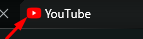
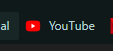

Um favicon é um icone de favorito que fica na aba da sua pagina da web ou quando se salva como favorito em seu navegador, exemplo:
 
Para adicionar um favicon basta pegar uma imagem no formato .ico (você pode fazer isso no site iconarchive.com) dentro da Tag <head> </head> você digite <link rel="shortcut icon" href=" " type="image/x-icon">, no atributo hrel=" " faça o mesmo como se coloca uma imagem e pronto.